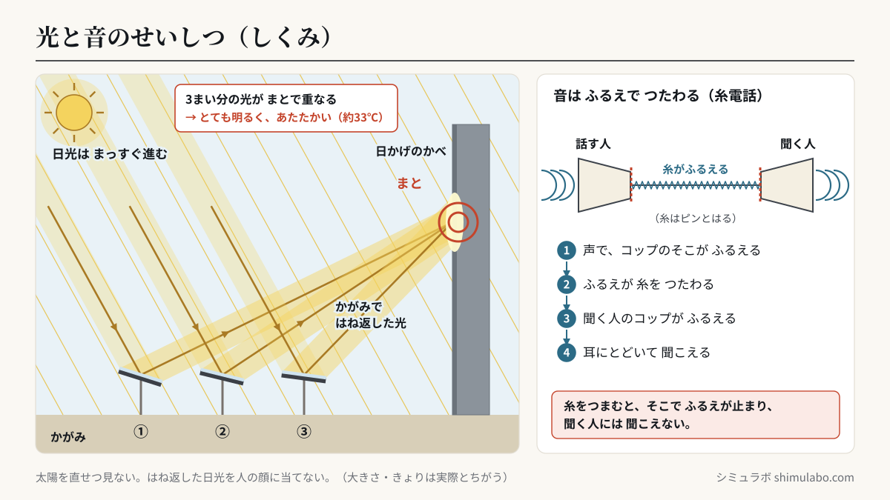
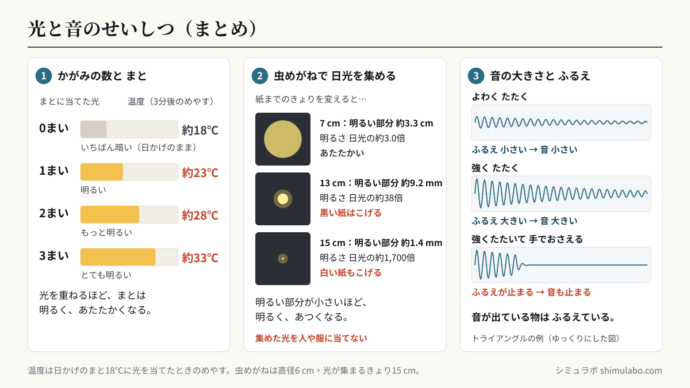

このシミュレーションでわかること
日光はまっすぐ進み、かがみではね返すと向きが変わります。はね返した日光を日かげのまとに当てると、まとは明るく、あたたかくなり、かがみの数をふやして光を重ねるほど、もっと明るく、あたたかくなります。虫めがねを使うと日光を集めることができ、明るい部分を小さくするほど明るく、あつくなって、黒い紙がこげることもあります。音が出ている物はふるえていて、強くたたくとふるえが大きく、音も大きくなります。ふるえを止めると音も止まり、糸電話の糸をつまむと音がつたわらなくなります。
授業での使い方
導入：くもりの日・雨の日でも「日光」の学習を進める
光の単元は天気に左右されます。くもりや雨で外に出られない日は、「① かがみで日光をはね返す」で、かがみを指でつかんで光の道すじを動かし、日光がまっすぐ進むことや、はね返すと向きが変わることを確かめます。晴れた日の実験の前に見せておくと、「どこに当てればいいか」「人の顔に当ててはいけない」といった約束を全員で確認できます。
展開：光を重ねる・集める
かがみの数を1まい・2まい・3まいとふやし、「🎯 全部まとにねらう」で光を重ねると、まとの温度のめやすが上がっていきます。右の表と、実際に放射温度計などではかった結果をくらべて、表にまとめる活動につなげます。「② 虫めがねで日光を集める」では、虫めがねを指で上下に動かし、明るい部分の大きさと明るさ・あたたかさの関係を調べます。黒い紙と白い紙をくらべることもできます。
まとめ：音のふるえ（③ 音のふるえ）
トライアングル・たいこ・わゴムを、強さを変えてたたいたり、はじいたりして、ふるえのグラフの「たてのはば」をくらべます。前にたたいたときのグラフが灰色で残るので、強さのちがいが一目でわかります。「✋ 手でおさえる」でふるえを止めると、音も止まります。糸電話では、糸をつまむと聞く人のコップがふるえなくなり、聞こえなくなることを確かめます。音は「🔇 音を出す」をONにしたときだけ、ボタンを押すと小さく鳴ります（数秒で自動で止まります）。
児童への問いの例
- かがみを2まい、3まいと使って光を重ねると、まとの明るさとあたたかさはどうなるでしょう？
- 虫めがねで集めた日光の、明るい部分を小さくすると、明るさとあたたかさはどうなるでしょう？ なぜ、人や服に当ててはいけないのでしょう？
- たいこを強くたたいたときと、よわくたたいたときで、まくの上のビーズのはね方はどうちがうでしょう？ 音の大きさとふるえには、どんな関係がありますか？
しくみ・解説






図はタップすると大きく表示されます。授業のプリント・スライド・板書計画に自由に使えます（出典「シミュラボ」とページのURLを添えてください）。
言葉の意味（1文で）
- 日光はまっすぐ進むとは、太陽の光が、何かに当たるまでは曲がらずに、まっすぐな道すじで進むということです。
- 光をはね返すとは、かがみなどに当たった日光が、向きを変えて進むことで、かがみの向きを変えると、はね返った光の行き先も変わります。
- 光を集めるとは、虫めがねを使って、日光を小さな部分に集めることで、明るい部分が小さいほど明るく、あつくなります。
- 音のふるえとは、音が出ている物が、細かく速く行ったり来たりしている動きのことで、ふるえが大きいほど音は大きくなります。
かがみのまい数と、まとの明るさ・温度の早見表（めやす）
| まとに当てた光 | 明るさ | 温度（3分後のめやす） |
|---|---|---|
| 0まい（日かげのまま） | いちばん暗い | 約18℃ |
| 1まい | 明るい | 約23℃ |
| 2まい（光を重ねる） | もっと明るい | 約28℃ |
| 3まい（光を重ねる） | とても明るい | 約33℃ |
このシミュレーターの温度は、日かげのかべにはったまと（18℃）に、はね返した日光を3分くらい当てたときのめやすとして、光1まい分で約5℃上がるようにしています。実際の温度は、季節・時こく・天気・まとの色によって大きくかわるので、実験ではかった値を表にまとめてください。大切なのは「光を重ねるほど、明るく、あたたかくなる」という関係です。
虫めがねの早見表（直径6 cm・光が集まるきょり15 cmの虫めがね）
| 紙とのきょり | 明るい部分の直径 | 明るさ（日光の何倍） | 黒い紙のようす（めやす） |
|---|---|---|---|
| 2 cm | 約5.2 cm | 約1.2倍 | 日なたと同じくらい |
| 7 cm | 約3.3 cm | 約3.0倍 | あたたかい |
| 10 cm | 約2.1 cm | 約7.4倍 | とても あつい |
| 13 cm | 約9.2 mm | 約38倍 | 黒い紙はこげる |
| 15 cm | 約1.4 mm | 約1,700倍 | 黒い紙も白い紙もこげる |
| 20 cm | 約2.2 cm | 約6.8倍 | とても あつい |
明るい部分の大きさが半分になると、面積は4分の1になるので、同じ量の日光が4倍こく集まります。だから、明るい部分を小さくするほど、明るく、あつくなります。
音の大きさとふるえの関係
| すること | ふるえ（ふれはば） | 音 |
|---|---|---|
| よわくたたく（はじく） | 小さい | 小さい |
| 強くたたく（はじく） | 大きい | 大きい |
| 手でおさえて止める | 止まる | 止まる（聞こえない） |
| 糸電話の糸をつまむ | つまんだ所から先はふるえない | 聞く人には聞こえない |
先生向けの補足
・「こげる」の判定は、黒い紙で日光の約30倍以上、白い紙で約200倍以上をめやすとしています（白い紙は光の多くをはね返すため）。実際には紙の種類や当てる時間で変わります。
・音のグラフは、音の大きさ（ふれはば）の関係を見せるため、ふるえの速さ（振動数）を1秒間に数回まで遅くしてあります。実際のトライアングルは1秒間に千回以上ふるえています。振動数と音の高さは中学1年「音の性質」で扱います。
このシミュレーションで単純化していること
- はね返した光の道すじは、見やすいように黄色の帯でかいています。実際の空気中では、光の道すじはほとんど見えず、当たった所が明るく見えます。
- かがみはどれも同じ大きさで、日光は左上から同じ向きに来るものとしています。かがみの数は3まいまでです。
- 温度は「めやす」です。まとが日光を受けてあたたまるまでの時間や、風・まとの色のちがいは考えていません。
- ふるえの大きさは、たたく強さに比例するとしています。音の大きさは「小さい〜大きい」の5だんかいで表しています。
参考
- 文部科学省「小学校学習指導要領（平成29年告示）解説 理科編」第3学年 A（3）光と音の性質（小学校学習指導要領・解説）
- 小学校理科の教科書（第3学年「光のせいしつ」「音のせいしつ」の単元）
- 国立天文台 編『理科年表』（太陽の視直径 約32′＝約0.53°）
引用・転載について
本ページのシミュレーション結果・数値は、出典を明記いただければブログ・ニュース記事・SNS・授業や社内資料への引用を歓迎します。事前連絡は不要です。
出典：シミュラボ「光と音のせいしつシミュレーター（かがみ・虫めがね・音のふるえ）」 https://shimulabo.com/sims/hikari-oto/よくある質問
- かがみではね返した日光は、どのように進みますか？
- まっすぐ進みます。かがみの向きを変えると、はね返った日光の進む向きも変わります。日光がまっすぐ進むので、かべに当たった所だけが明るくなります。
- かがみの数をふやして光を重ねると、どうなりますか？
- 光を重ねるほど、当たった所は明るく、あたたかくなります。1まいより2まい、2まいより3まいの方が、明るく、温度も高くなります。
- 虫めがねで日光を集めると、どうなりますか？
- 明るい部分を小さくするほど、明るく、あつくなります。黒い紙に当てると、こげてけむりが出ることがあります。虫めがねで太陽を見たり、集めた光を人や服・生き物に当てたりしてはいけません。
- 黒い紙と白い紙では、どちらがこげやすいですか？
- 黒い紙の方がこげやすいです。黒い紙は光を多く吸ってあたたまり、白い紙は光の多くをはね返すからです。
- 音が出ているとき、物はどうなっていますか？
- 物はふるえています。強くたたくとふるえが大きくなり、音も大きくなります。ふるえを手でおさえて止めると、音も止まります。
- 糸電話の糸をつまむと、なぜ聞こえなくなるのですか？
- 糸電話は、話した声でコップがふるえ、そのふるえが糸をつたわって、聞く人のコップをふるわせることで音がつたわります。糸をつまむと、そこでふるえが止まってしまうので、聞こえなくなります。